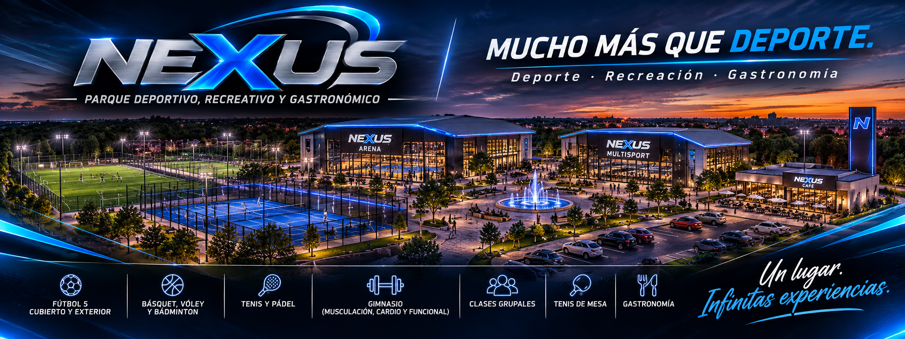

Parque deportivo · Recreativo · Gastronómico
MUCHO MÁS
QUE DEPORTE.
Un lugar para moverte, encontrarte, disfrutar y vivir nuevas experiencias.

DEPORTERECREACIÓNGASTRONOMÍACOMUNIDAD
01 / CONOCÉ NEXUS
Un mismo lugar.
Infinitas formas de disfrutar.
NEXUS es un parque deportivo, recreativo y gastronómico que integra instalaciones cubiertas, canchas al aire libre, entrenamiento, espacios verdes y propuestas para compartir.
Un espacio abierto a personas de todas las edades: para quienes entrenan, quienes quieren probar un deporte nuevo, quienes vienen en familia o quienes simplemente buscan pasar un buen momento.
Descubrí nuestras instalacionesNEXUS se encuentra en etapa de proyecto. Las imágenes son referencias conceptuales y la distribución final podrá ajustarse durante el desarrollo.
02 / DOS EDIFICIOS, MUCHAS POSIBILIDADES
El corazón deportivo
de NEXUS.
Dos espacios independientes, diseñados para distintas disciplinas, entrenamiento y recreación.
01Edificio deportivo
ARENA
DEPORTES DE SALÓN + FITNESS
NEXUS ARENA
Un edificio de dos niveles con una cancha cubierta multipropósito en planta baja y un área de entrenamiento en la planta alta parcial.
- Cancha adaptable para básquet, vóley y bádminton
- Gradas, vestuarios, duchas y sanitarios accesibles
- Gimnasio: musculación, cardio y funcional
- Sala para clases grupales
36 × 32 mPlanta baja · aprox. 1.152 m²
02Edificio deportivo
MULTISPORT
FÚTBOL + RECREACIÓN
NEXUS MULTISPORT
Un segundo edificio independiente, con fútbol 5 cubierto en planta baja y espacios recreativos y de entrenamiento en el nivel superior.
- Cancha cubierta de fútbol 5 con césped artificial
- Gradas, vestuarios, duchas y sanitarios accesibles
- Sector recreativo con 4 mesas de tenis de mesa previstas
- Preparación física, sala grupal y área de descanso
50 × 32 mPlanta baja · aprox. 1.600 m²
03 / ELEGÍ TU CANCHA
Tu próximo partido
empieza acá.
Distintas disciplinas, espacios preparados y turnos organizados para que disfrutes el juego.
⚽
CANCHAS EXTERIORES + CUBIERTA
Fútbol 5
Una cancha cubierta en MULTISPORT y una exterior.◉
NEXUS ARENA
Básquet
En cancha cubierta multipropósito.⌁
NEXUS ARENA
Vóley
Un espacio adaptable para jugar en equipo.⌁
NEXUS ARENA
Bádminton
La cancha se adapta para esta disciplina.🎾
CANCHA EXTERIOR
Tenis
Cancha independiente al aire libre.���
CANCHA EXTERIOR
Pádel
Cancha específica con cerramientos. La cancha de NEXUS ARENA es un único espacio multipropósito: los deportes se programan en horarios diferentes.
04 / MUCHO MÁS QUE CANCHAS
Entrená, aprendé
y compartí.
También hay lugar para mejorar tu entrenamiento, descubrir actividades y disfrutar de un momento recreativo.
NEXUS ARENA · PLANTA ALTA
Gimnasio
Un espacio para entrenar a tu ritmo, con sectores diferenciados.
MusculaciónCardioFuncionalPesas libres
Turnos y capacidad: a definir
ARENA + MULTISPORT
Clases grupales
Dos salas previstas para actividades dirigidas, encuentros y propuestas grupales.
Clases programadasInscripciónReserva de sala
Programación: próximamente
NEXUS MULTISPORT · PLANTA ALTA
Tenis de mesa
Un sector recreativo para jugar entre amigos o sumar un desafío diferente.
4 mesas previstasTurnos
Disponibilidad: por horario
PLAZA CENTRAL + PARQUE
Espacios para disfrutar
Una plaza con fuente, árboles, jardines, senderos, bancos y rincones para reunirse.
Acceso libreEspacios verdesDescanso
Un respiro entre actividades.
05 / UN MOMENTO PARA COMPARTIR
La experiencia
también se disfruta.
NEXUS proyecta cuatro puntos gastronómicos distribuidos estratégicamente para acompañar cada sector del complejo, desde una pausa entre entrenamientos hasta una salida para compartir.
Conocé los espacios comunesCantina ARENA
Opciones prácticas, bebidas y snacks cerca del gimnasio y los deportes de salón.
Cantina MULTISPORT
Bebidas, sándwiches, tostados y snacks junto al sector de fútbol y recreación.
Cantina de canchas exteriores
Un punto de hidratación y comida ligera para antes o después de jugar.
Cantina de la plaza central
Café, licuados, jugos, helados, comidas ligeras y opciones para compartir.
06 / UN PARQUE ABIERTO
Hay muchas formas
de ser parte.
No hace falta venir a jugar para disfrutar NEXUS. El parque y sus espacios comunes están pensados para recibir a toda la comunidad.
Ingreso al parque
Acceso libre a los espacios recreativos comunes.
Senderos y espacios verdes
Recorridos para caminar, encontrarse y disfrutar del entorno.
Plaza central y fuente
Un punto de encuentro con jardines, bancos y zonas de descanso.
Bebederos de agua potable
Puntos de hidratación distribuidos cerca de los principales sectores.
07 / DISEÑADO PARA RECIBIRTE
Comodidad en
cada recorrido.
La accesibilidad y la circulación forman parte del proyecto desde el inicio.
01Rampas y recorridos peatonales accesibles.
02Ascensores en los dos edificios.
03Sanitarios y vestuarios accesibles.
04Espacios para sillas de ruedas en las gradas.
05Estacionamiento para autos, motos y bicicletas.
06Recepción para orientación y control de reservas.
08 / ORGANIZÁ TU VISITA
Tu próximo turno
empieza acá.
Elegí recurso, fecha y duración; consultá disponibilidad y precio antes de confirmar la reserva.
01 Elegí tu actividad02 Seleccioná día y horario03 Confirmá tu reserva
Consultar reservas La reserva requiere configuraciones operativas y de precios administradas.
Reservas claras.
Experiencias que conectan.
09 / PREGUNTAS FRECUENTES
Todo claro
antes de venir.
Información general sobre el funcionamiento proyectado de NEXUS.
¿NEXUS será solamente para socios?
No. El proyecto contempla el ingreso libre al parque y sus espacios comunes. Las personas pagarán por las instalaciones deportivas y los servicios específicos que utilicen. No se plantea una membresía obligatoria.
¿Cómo se reservarán las canchas?
Se proyecta un sistema digital para elegir deporte, instalación, fecha y horario, consultar el precio y recibir un comprobante con código de reserva y QR. Al llegar, la recepción verificará la reserva.
¿La cancha de NEXUS ARENA sirve para varios deportes?
Sí. Será una única cancha cubierta adaptable para básquet, vóley y bádminton. La disponibilidad de cada disciplina dependerá de la programación horaria.
¿Habrá espacios para quienes no practican deportes?
Sí. El parque contempla plaza central con fuente, senderos, bancos, jardines, espacios verdes y cantina. El ingreso a los espacios comunes será gratuito.
¿NEXUS tendrá opciones gastronómicas?
El proyecto contempla cuatro cantinas: una próxima a ARENA, otra a MULTISPORT, una cerca de las canchas exteriores y otra en la plaza central.
¿Cuándo abrirá NEXUS y cuáles serán los precios?
La fecha de apertura, los horarios y las tarifas todavía no están definidos. Se comunicarán por los canales oficiales cuando estén confirmados.